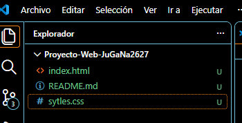
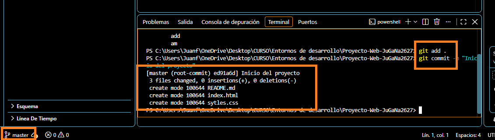

Para empezar a realizar la práctica creamos una carpeta a la que llamaremos "Proyecto-Web-JuGaNa2627", durante toda la práctica se trabajara con el contenido de esta carpeta, una vez hecho necesitamos también crear dentro de esta unos archivos siendo los siguientes:
Para hacerlo abrimos Visual Studio Code y una vez dentro, clicamos en Archivo, y en el desplegable clicamos en Abrir Carpeta...
Se abrirá una ventana en la que podemos explorar por los archivos de nuestro ordenador, buscamos la carpeta que hemos creado al principio, la carpeta llamada "Proyecto-Web-JuGaNa2627".
Una vez hecho esto con el programa podemos ir creando cómodamente los archivos en cuestión que se necesitan para la realización de la práctica, para ello en el explorador, arriba a la izquierda donde aparece el nombre de nuestra carpeta, se pueden observar unos iconos, nos interesa uno en concreto, al poner el cursor sobre cada icono aparece lo que realiza si clicamos sobre él, buscamos el que dice Nuevo archivo...
La primera vez que hacemos esto saldrá una ventana siendo esta un explorador de archivos para determinar dónde queremos que se guarde el archivo que estamos creando en cuestión, elegimos la carpeta con la que hemos dicho que vamos a trabajar y como nombre del archivo escribimos index.html, le damos a aceptar y ya está creado el primero, para los otros archivos hacemos el mismo procedimiento siendo README.md y styles.css en mi caso respectivamente.
Una vez hecho todo esto nos quedaría el programa tal que así:

Para continuar en el programa clicamos en Ver, se abrirá un desplegable y en este clicamos donde pone Terminal, esto hará que en el programa podamos ver el terminal y podamos trabajar en él, se apreciará que se abre abajo.
Antes de trabajar en él debemos configurar algo primero, en el terminal escribimos lo siguiente:
git config --global user.name "Juan Fran"
Con esto estamos configurando el nombre que queremos utilizar para trabajar en el proyecto, es útil para saber quién está trabajando en el a la hora de hacer la estructura y los cambios.
git config --global user.email "juagarnad2@alu.edu.gva.es"
Y con esto estamos asignando un email para poder para poder utilizarlo en plataformas como GitHub.
git init
Con esto estamos inicializando el repositorio en la carpeta de tu proyecto, además desde este momento se habrá creado una rama llamada main.
Ahora vamos a hacer que sea rama sea master mediante el siguiente comando:
git config --global init.defaultBranch master
Para continuar en el terminal escribimos:
git add .
Esto hará que se añada al repositorio todo lo que hay hasta ahora que no se haya añadido antes, podemos especificar de uno en uno el nombre de los archivos, pero de este modo es más rápido, una vez introducido metemos el siguiente código:
git commit -m "Inicio del proyecto"
Con esto hemos hecho un commit (o confirmar los cambios) es básicamente como un punto de control permanente en el proyecto en el historial de Git.
Ahora vemos lo siguiente en el programa:

Se puede observar que la rama que estamos usando es master, que hemos usado los gits para poner en el repositorio los archivos y el commit para confirmarlo.
Vamos a continuar creando la página web, para ello en el programa, donde hemos creado el index.html clicamos en él y empezamos a crear la página escribiendo la estructura básica.
Para cualquier duda o sugerencia, puedes contactarme a través de mi correo electrónico:
juagarnad2@alu.edu.gva.es